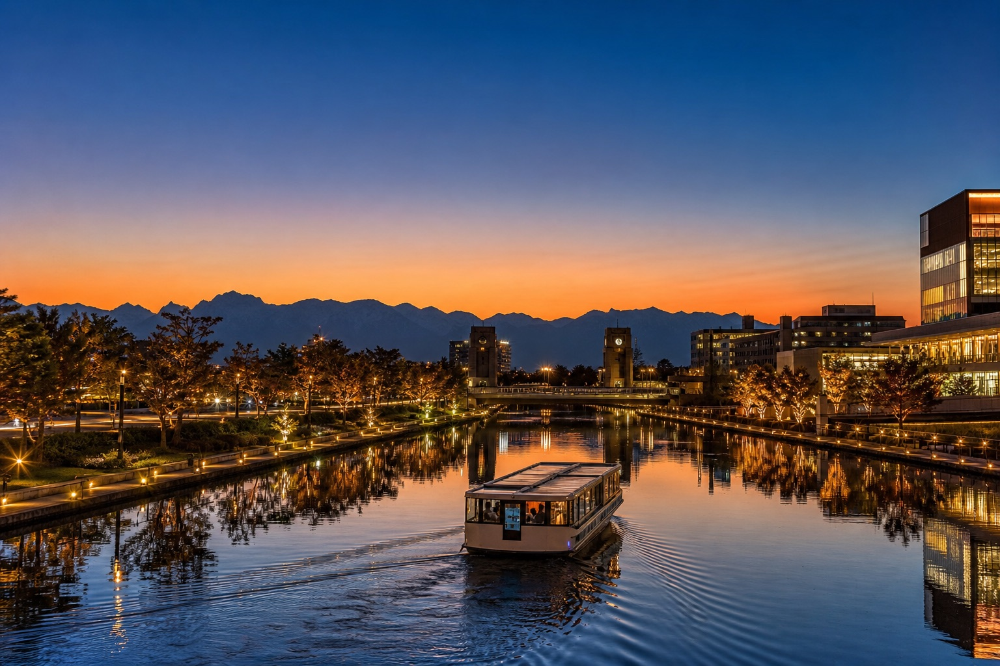
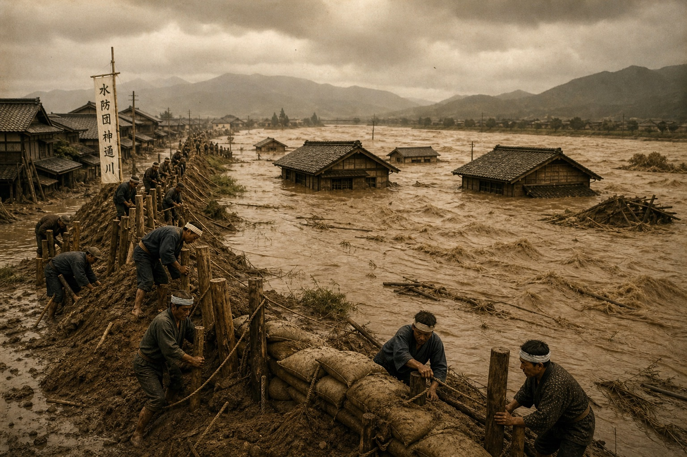
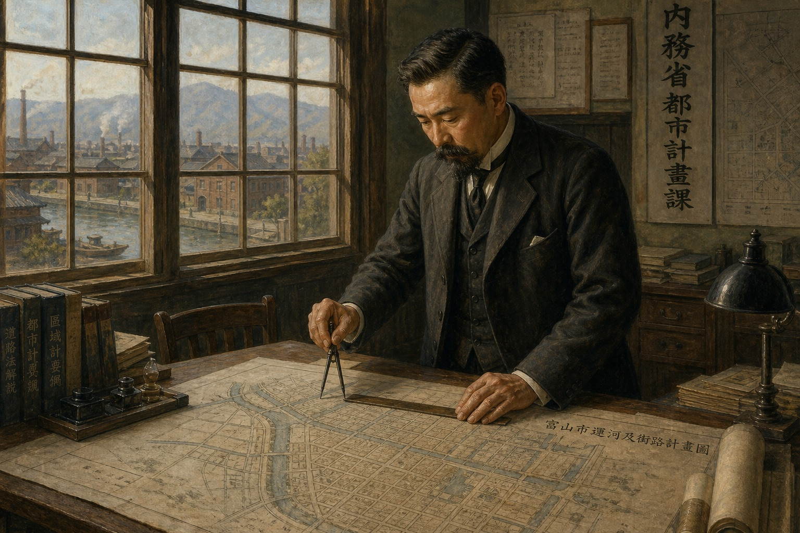

富山曾是一座因水患而獨立建省的城市。1935年，這座城市把治水工程直接蓋成了新市區，開鑿出一條連接市中心與富山灣的運河。它繁華過、沒落過，一度淪為淤積腐臭的貯木場，最後卻被市民從填平的命運裡搶救回來，改建成今天擁有「世界最美星巴克」美譽的富岩運河環水公園。
翻開富山的建省史會發現，這座城市與神通川的恩怨，比運河本身還要早得多。1883年（明治16年），富山之所以能從石川縣分離獨立成為一個縣，很大一部分原因，就是地方仕紳受夠了石川縣政府把稅金優先花在金澤，卻遲遲不願正視富山境內神通川反覆氾濫的治水問題——換句話說，富山縣的誕生，本身就是一場治水運動的產物。
富岩運河，正是這段治水史半個世紀之後最具體的成果。1928年，內務省技師赤司貫一提出一份把「開鑿運河、土地區劃整理、街路與公園建設」三件事同時完成的都市計畫，被當時內務省幹部評為「日本首見的嘗試」。1935年運河通航，不只解決了水患與港運，開挖出的130萬立方公尺土方，更直接填出了今天富山車站前一整片市中心。

神通川原本在今日富山大橋一帶劇烈蛇行，每逢豪雨就頻繁潰堤，是富山最頭痛的地形宿疾。明治34年（1901年）到大正11年（1922年），當局實施「馳越線」改修工程——先挖出一條僅寬2公尺、深1.5公尺的細窄水道，捷徑截彎取直，再刻意利用洪水的沖刷力，讓水流自然把這條細水道拓寬成新的主流河道。
這項工程耗時二十餘年才完全把河水移轉到新河道，原本蛇行的舊河道自此廢棄，成為一片沿著市中心蜿蜒的「廢川地」——這片閒置的舊河床，後來就是富岩運河與市中心新市街規劃的用地起點。
富岩運河的故事分成三段：因水患而生的規劃、因產業變遷而沒落、再因市民保留運動而重生。以下時間軸整理這條運河從構想、通航、衰敗到蛻變的關鍵節點。
富山灣畔的東岩瀬港，是北前船（沿日本海往返的廻船貿易船隊）重要的中繼港，廻船問屋林立，商業繁盛一時，森家等大商號的宅邸至今仍保留在岩瀬老街。
人工開鑿窄水道，利用洪水力量自然拓寬成新河道，耗時二十餘年才完全移轉水流，舊河床自此廢棄閒置，成為日後運河與新市街的用地基礎。
內務省技師赤司貫一擬定「運河開鑿＋土地區劃整理＋街路公園建設」同步進行的方案，獲內務省幹部評為「日本首見的嘗試」，富山市都市計畫事業正式拍板。
運河工程於6月正式動工，適逢世界經濟大蕭條，這項工程同時被規劃為「失業對策事業」，提供大量勞動人口就業機會。
仿巴拿馬運河式的雙重水門系統完工，用來調節上下游2.5公尺的水位落差，是當時日本國內數一數二的先進土木技術。
1月31日正式完工通航，全長5.1公里，總工程費177萬圓，挖掘的130萬立方公尺土方用來填平廢川地、造出新市街，並整備東岩瀬港岸壁。
運河沿岸因地價與電費便宜，戰後吸引大量工廠進駐，形成一大工業地帶；但隨著卡車運輸興起、電費上漲、周邊住宅化與水質污染，運河利用逐漸式微，一度淪為堆置原木的貯木場，腐爛樹皮淤積孳生蚊蠅，環境每況愈下。
當局原本在1979年提出填平半條運河闢建道路的計畫，卻在市民反對聲浪下逆轉，改採「新都市據點整備事業」，將運河定位為都市再生的核心資產。
7月，歷經「富山市MIRAI計畫」多年水岸再生工程，沒落的工業運河搖身一變成為今日綠意盎然、以天門橋與湖畔星巴克聞名的市民公園。
這座仍在運作、調節2.5公尺水位差的巴拿馬式雙重水門，正式被指定為國家重要文化財，成為日本少數現役運作的近代閘門文化資產之一。
用閘門分段調節水位、讓船翻越高低差的技術，日本其實還有幾個很有意思的先例——有的比巴拿馬運河本尊還早了將近兩百年，有的則早已停用、變成靜態古蹟。中島閘門真正稀有的地方，其實是它至今仍在「現役」運作。
見沼通船堀（埼玉縣）——1731年（享保16年）由德川吉宗下令、井澤彌惣兵衛主持建造，用木造閘門調節「見沼代用水」與「芝川」之間約3公尺的水位差，服務江戶到明治時期的內陸船運。巴拿馬運河1914年才完工，見沼通船堀足足早了它183年——日本人在江戶中期就已經玩懂這套水位調節邏輯。可惜它現在已不再實際通航，僅保留遺構做示範展演，1982年列為國家史蹟。
三栖閘門（京都・伏見）——1929年（昭和4年）完工，位於宇治川與伏見港護城河交會處，因宇治川治水築堤把伏見港與宇治川隔開，才蓋這座閘門維持船運。全盛期一年通行船隻超過2萬艘，卻在1962年隨陸運興起停止通航，原址現已改建成「三栖閘門資料館」，變成純粹的靜態展示古蹟。
放大到全世界看，這種技術最知名的當然是巴拿馬運河本尊（1914年）；蘇格蘭則有更酷的現代進化版「福爾柯克輪」（Falkirk Wheel，2002年啟用）——乾脆用一座巨型摩天輪狀機械把整艘船連水一起吊起轉90度送上高處運河，把「水電梯」直接升級成「船電梯」。
從富山車站步行10分鐘可達的環水公園，到運河另一端保留北前船風情的岩瀬老街，這條運河串起了富山最現代與最古老的兩種面貌。
巴拿馬運河式雙重水門，調節2.5公尺水位差，1998年指定國家重要文化財，至今仍供遊覽船實際通過體驗。
橫跨運河的白色斜張橋，兩端瞭望塔可眺望立山連峰與公園全景，塔間設有「戀人聖地」認證的紅色電話。
以「水與草坪延伸的休憩之地」為概念設計，玻璃帷幕面向運河而建，獲選為「地域地標店」，是近年富山最熱門的打卡地標。
江戶至明治年間北前船貿易全盛期的港町街景，森家宅邸建於明治11年（1878年），保留屋久杉板戶、能登黑松梁柱等傳統町屋工藝。
連接環水公園與岩瀬的運河遊船，途中會實際通過中島閘門體驗水位升降，由縣營客船「kansui」「fugan」「sora」與市營電動船「もみじ」共4艘船雙向往返運行，是重新走一遍運河身世最直接的方式。

赤司貫一（1890–1954）任職內務省技師期間，接下了富山這座長年苦於水患的城市的都市計畫案。他沒有把「開鑿運河」「填地造鎮」「建設街路公園」拆成三個各自獨立的工程，而是提出一份三者同步進行的整合方案——用運河開挖的土方直接填出新市街，再一併規劃道路綠地，讓治水建設本身就是都市規劃的骨架。
當時內務省幹部對此讚譽為「日本首見的嘗試」，這也是為什麼今天富山車站前的縣廳、市役所、NHK等機構林立的市中心地帶，其實就站在昭和初年這場運河工程填出來的土地上。
運河通航後的三十年，沿岸憑藉低廉地價與電費吸引大批工廠進駐，一度形成富山最重要的工業地帶。但進入高度經濟成長期後，卡車運輸取代水運、電費上漲、周邊住宅化與水質污染接踵而至，運河的產業機能迅速式微，最終淪為堆置原木的貯木場——腐爛樹皮長年淤積水面，成為蚊蠅孳生的環境死角。
1979年，當局一度提出填平半條運河改建道路的計畫，卻在市民強烈反對下於1984年逆轉方向，轉而推動「新都市據點整備事業」。歷經1988年「富山市MIRAI計畫」的水岸再生工程，這條沒落的工業運河終於在1997年脫胎換骨，開闢成今日以天門橋與湖畔星巴克聞名的富岩運河環水公園。
1984年的保留決定，是這條運河命運的分水嶺——如果當初填平計畫照原案執行，今天就不會有天門橋、環水公園，也不會有那間被譽為「世界最美」的星巴克。市民的反對聲浪，直接把一條瀕臨消失的工業水道，變成了富山最具代表性的城市名片。
環水公園步行即可深度遊覽，若想連岩瀬老街與運河遊船一起排入，建議安排半天到一天。
從JR富山駅北口步行約10分鐘即達環水公園，是市區內最容易抵達的景點之一。
前往岩瀬老街可搭乘富山地方鉄道富山港線至終點岩瀬濱駅，或直接搭乘富岩水上ライン遊船抵達。
環水公園至岩瀬約1小時航程，途中實際通過中島閘門體驗水位升降，分中島便、岩瀬便等航段，建議事先查詢當日時刻與是否停駛。
傍晚天門橋與湖畔星巴克的燈光倒影最具代表性；春季沿岸櫻花、秋季紅葉倒映水面，也各有不同風景。
從富山駅步行至環水公園，搭遊船通過中島閘門後抵達岩瀬，實際航班時刻請以富岩水上ライン官網公告為準。
從富山駅北口步行約10分鐘，是全程最容易抵達的起點。
登上瞭望塔眺望環水公園全景與立山連峰輪廓，順道體驗塔間的紅色戀人電話。
面向運河的玻璃帷幕座位，是稍作休息、拍照打卡的最佳地點。
從環水公園碼頭登船，沿運河一路航向岩瀬，途中會實際降下水門。
親身體驗巴拿馬式雙重水門調節2.5公尺水位差的「水電梯」過程。
下船後散步舊街道，走訪國家重要文化財森家宅邸，感受江戶到明治的港町風情。
船票採當日現場購票為主，個人（14人以下）也可線上預約；團體或包船則需電話另洽。以下票價與購票規則整理自官網公告，實際金額與時刻請以出發前最新資訊為準。
| A課程 | 環水公園 → 岩瀬，單程2,500円，約60分鐘 |
| B課程 | 岩瀬 → 環水公園，單程2,500円，約70分鐘 |
| C課程 | 環水公園 ↔ 中島閘門，來回2,000円，約70分鐘，含中島閘門操作室參觀 |
| 環水公園周遊 | 不出運河的短程周遊，700円，約20分鐘 |
| 兒童票 | 小學生半價，學齡前兒童免費 |
| 包船（貸切） | 一般船（fugan／sora／kansui，55人座）60,000円／90分；小型船もみじ（11人座）21,000円／90分 |
個人預約最早可提前3個月、最晚到搭乘前一天下午2點；15人以上團體與包船需電話預約：076-482-4116（09:00–17:00）。官網未列出全年時刻表，冬季部分航段可能停駛，建議出發前查詢富岩水上ライン官網當期公告。
| 環水公園 | 全天開放，免費入場，無公休日 |
| 富岩水上ライン | 依季節調整班次，冬季部分航段停駛，票價與購票方式見上方「Cruise Tickets」專區 |
| 中島閘門通過體驗 | 約需10–15分鐘（含等候水位調節），僅隨遊船航程體驗，無法單獨參觀操作 |
| 星巴克環水公園店 | 營業時間依店家公告為準，建議避開假日午後排隊人潮 |
| 岩瀬・森家 | 對外開放參觀，實際時間與休館日請查詢富山市官方觀光資訊 |
| 富山縣美術館 | 就位於環水公園旁，建築與戶外草坪本身也是熱門拍照點。 |
| 岩瀬老街散策 | 除了森家，沿街還有多間酒藏與傳統町屋建築可順道走訪。 |
| 富山市中心步行圈 | 富岩運河填地造出的市中心一帶，縣廳、市役所、路面電車皆可步行串聯。 |
這條運河串起的不只是一條水路，更是富山從水患到工業、再到今天觀光城市的整條發展軸線。散步時不妨留意這些容易被忽略的角落。